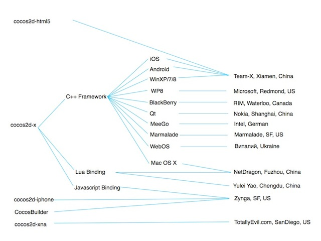
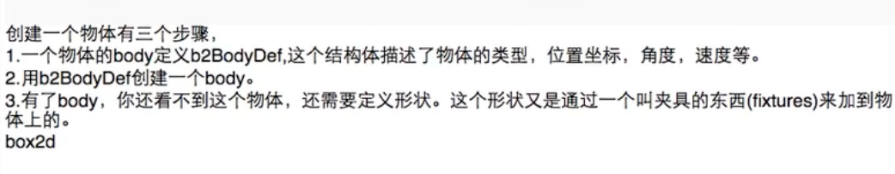
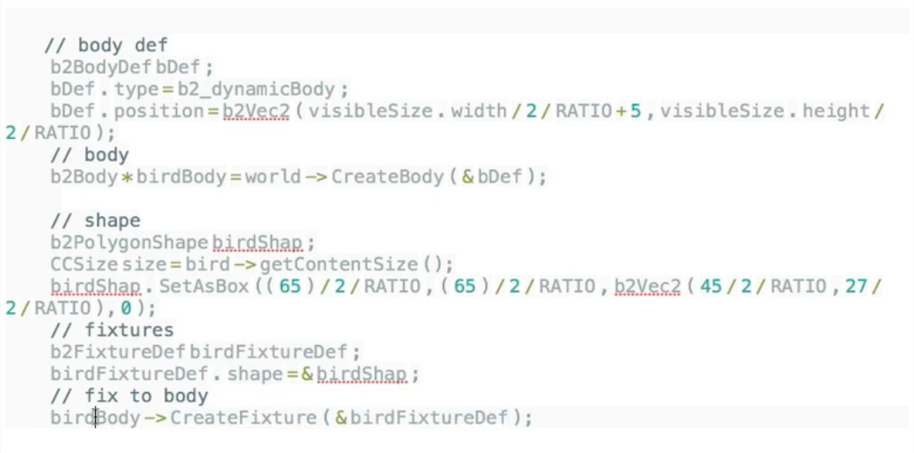
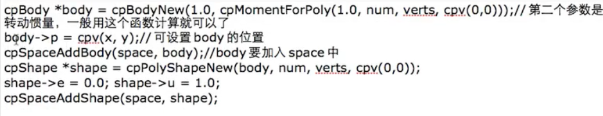
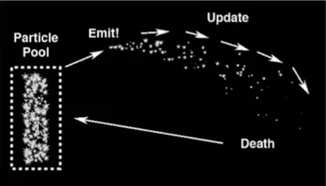

游戏引擎
之
Cocos2d-x
什么是游戏引擎？
为了简化游戏开发的流程，对一些常用的功能和模块进行封装，比如：
- 图像渲染
- 物理引擎
- 碰撞检测
- 音效
- 人工智能
- 网络
Cocos2d-x是目前最流行的跨平台2D游戏引擎，开源，免费，MIT许可协议。
- 主要由触控科技支持。
- 现在主要是2D，3D也已推出。2014年7月17日，3D版《捕鱼达人3》正式上线安卓和iOS平台
- 跨桌面、移动、Web三大平台。
Cocos2d家族
Cocos2d-python => Cocos2d-iphone => Cocos2d-x
主打四大大产品
array(Cocos2d-x, Cocos2d-js, CocoStudio,
Cocos Creator);
Cocos2d-x
- 利用已有的C++、Lua或者Javascript经验开发可以部署到各种桌面和移动平台上
- 用C++最佳实践替换掉了objective-c模式
- 3.0以上使用了大量的STL和C++11的特性，如auto关键字、闭包(Lambda表达式)
- 不能部署到浏览器中
Cocos2d-js
- Javascript版，使用原生Javascript提供了与Cocos2d-x完全相同的接口
- 代码对比：
- Cocos2d-x => vector<CCSprite *> array(a, b);
- Cocos2d-js => var array = [a, b];
- 全面支持桌面、移动和Web平台
CocoStudio
- 免费且专业的游戏开发工具包
- UI编辑器
- 动画编辑器
- 场景编辑器
- 数据编辑器
Cocos API风格
- 二阶段构造器及静态create()函数
- doSomething()
- onEventCallback()
- getInstance()
- Property：setProperty()，getProperty()，isProperty()
坐标系
- 屏幕坐标系和Cocos2d坐标系
- 世界坐标系(World Coordinate) VS 本地坐标系（Node Local)
- 锚点（Anchor Point）

标准屏幕坐标系使用和OpenGL不同的坐标系，而Cocos2d则使用和OpenGL相同的坐标系。 iOS, Android, Windows Phone等在开发应用时使用的是标准屏幕坐标系，原点为屏幕左上角，x向右，y向下。 Cocos2d坐标系和OpenGL坐标系一样，原点为屏幕左下角，x向右，y向上。
auto red = LayerColor::create(Color4B(255, 100, 100, 128), visibleSize.width/2, visibleSize.height/2); auto green = LayerColor::create(Color4B(100, 255, 100, 128), visibleSize.width/4, visibleSize.height/4); red->addChild(green); this->addChild(red, 0);
auto red = LayerColor::create(Color4B(255, 100, 100, 128), visibleSize.width/2, visibleSize.height/2); red->ignoreAnchorPointForPosition(false); red->setAnchorPoint(Point(0.5, 0.5)); red->setPosition(Point(visibleSize.width/2 + origin.x, visibleSize.height/2 + origin.y)); auto green = LayerColor::create(Color4B(100, 255, 100, 128), visibleSize.width/4, visibleSize.height/4); green->ignoreAnchorPointForPosition(false); green->setAnchorPoint(Point(1, 1)); red->addChild(green); this->addChild(red, 0);
auto red = LayerColor::create(Color4B(255, 100, 100, 128), visibleSize.width/2, visibleSize.height/2); red->ignoreAnchorPointForPosition(true); red->setPosition(Point(visibleSize.width/2 + origin.x, visibleSize.height/2 + origin.y)); auto green = LayerColor::create(Color4B(100, 255, 100, 128), visibleSize.width/4,visibleSize.height/4); green->ignoreAnchorPointForPosition(true); red->addChild(green); this->addChild(red, 0);
内存管理-绕不过去的坎
- Reference Count Management
- Ref,AutoreleasePool,PoolManager
- Retain,Release,Autorelease
- CREATE_FUNC
- new和autorelease, retain和release成对
内存管理－几个错误案例
auto obj = Scene::create(); obj->autorelease(); // Error
auto obj = Scene::create(); obj->release(); // Error
正确 做 法
auto obj = Scene::create(); // 这里retain和release对应，release一个已经被autorelease过的对象（例如通过create函数构造的对象）必须先retain obj->retain(); obj->release();
物理引擎
物理引擎通过为刚性物体赋予真实的物理属性的方式来计算运动、旋转和碰撞反映。为每个游戏使用物理引擎并不是完全必要的—简单的“牛顿”物理（比如加速和减速）也可以在一定程度上通过编程或编写脚本来实现。然而，当游戏需要比较复杂的物体碰撞、滚动、滑动或者弹跳的时候（比如赛车类游戏或者保龄球游戏），通过编程的方法就比较困难了。
物体的分类
- 动态物体(dynamic)，可以受力，可以碰撞，可以移动
- 静态物体(static)，不可以受力，不能移动，参与碰撞
- 运动学物体(kinematic)，不可以受力，但是可以移动，可以参与碰撞
物体的属性
质量、速度、转动惯量、角速度、位置、角度
Box2D && Chipmunk
搭建物理世界的步骤
以box2d为例
 Chipmunk
内置物理引擎 Chipmunk
粒子系统
粒子系统最早出现在80年代，主要用于解决由大量按一定规则运动（变化）的微小物质在计算机上的生成和显示问题。Particle System的应用非常广泛，大的可以模拟原子弹爆炸，星云变化，小的可以模拟水波、火焰、烟火、云雾等，而这些自然现象用常规的图形算法是很难逼真再现的。
Coordinate（坐标）
在烟火爆炸的时刻，每个粒子都有一个相同的初始坐标，随着时间的推移，粒子的新坐标将由它的旧坐标和加速度来求得
Velocity（速度）每个粒子都有一个随机产生的初始速度，粒子的新速度由加速度和空气阻尼来求得
Acceleration（加速度）在烟火中，每个粒子的加速度都等于重力加速度
Color（颜色）粒子颜色取决于粒子的速度或生命值的大小
Life（生命值）每个粒子都有一个初始的随机生命值，这个值将随着时间的推移而逐渐减小，直到等于0
粒子系统的生命周期
粒子系统相关属性
最大粒子数，生命值，浮动值，初始大小，终止大小，发射角度，起始旋转角度，终止旋转角度。
发射器
重力发射器，放射发射器